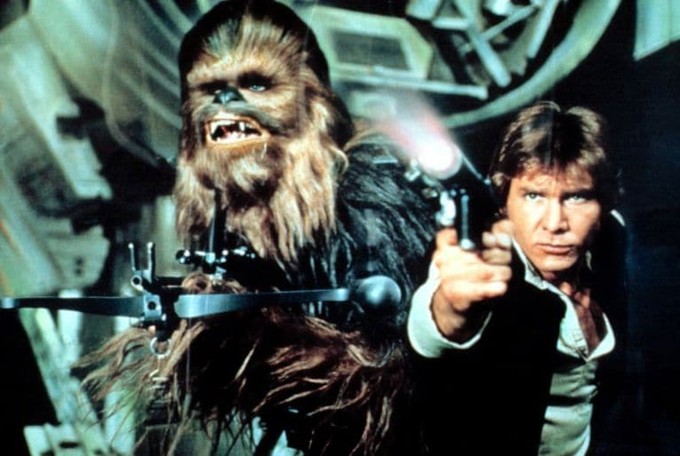
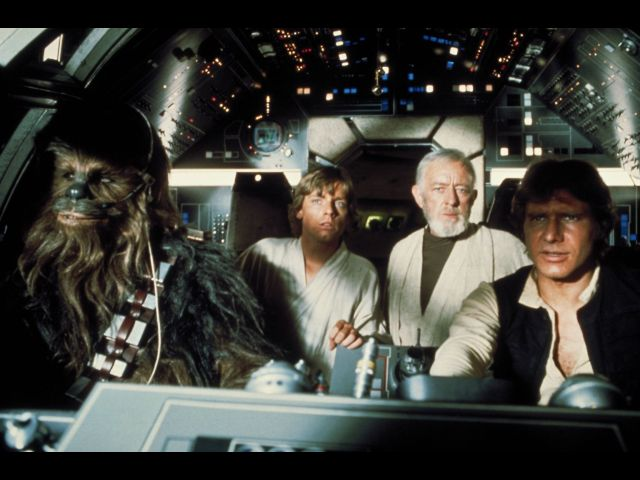

Star Wars is a science-fiction franchise comprising movies, books, comics, video games, toys, and animated
shows. It is a fictional universe created by George Lucas. The Star Wars story employs archetypal motifs
common to science fiction, political climax and classical mythology, as well as musical motifs of those
aspects.
As one of the foremost examples of the space opera subgenre of science fiction, Star Wars has become part of
mainstream popular culture, as well as being one of the highest-grossing series of all time. It is currently
the second highest-grossing film series behind only the Marvel Cinematic Universe.[1] and also the second
highest-grossing media franchise of all time (with only the Japanese franchise Pokémon outranking it).

Overview
The Star Wars story has been presented in a series of American films, which have spawned a large quantity of
books and other media, which have formed the Expanded Universe. The Star Wars mythos is also the basis of many
toys and games of varying types. The films and novels employ common science-fiction motifs.
Whereas Gene Roddenberry's Star Trek, a science fantasy franchise that has enjoyed long-lasting popularity in
American popular culture, is portrayed by its makers to appear as a rational and progressive approach to
storytelling, Star Wars has a strong mythic quality alongside its political and scientific elements.
Unlike the heroes of earlier space-set sci-fi/fantasy film and TV series such as Flash Gordon, the heroes of
Star Wars are not militaristic types but romantic individualists. College literature professors have remarked
that the Star Wars saga, with its struggle between good and evil, democracy and empire, can be considered a
national epic for the United States. The film has many visual and narrative similarities to John Ford's The
Searches, which also provides a clue to the relationship between Leia Organa and Luke Skywalker.
The strong appeal of the Star Wars story probably accounts for its enduring popularity; it has also been
postulated that this popularity is based on nostalgia. Many Star Wars fans first saw the films as children,
and the revolutionary (for the time) special effects and simple, Manichean story made a profound impact.
The Star Wars films show considerable similarity to Japanese Jidaigeki films, as well as Roman mythology.
Lucas has stated that his intention was to create in Star Wars a modern mythology, based on the studies of his
friend and mentor Joseph Campbell. He has also called the first movie's similarity to the film The Hidden
Fortress (Akira Kurosawa) an "homage.
The Star Wars films portray a world full of grime and technology that looks like it has been used for years,
unlike the sleek, futuristic world typical of earlier science-fiction films. In interviews, Lucas tells of
rubbing the new props with dirt to make them look weatherworn. Lucas may have been inspired by the Sergio
Leone Spaghetti Western films of the 1960s, which performed a similar function on the Western many years
earlier. It is tempting to speculate that this break from traditional science-fiction film influenced the
cyberpunk genre that emerged around 1984.
Licensed Star Wars novels have been published since the original movie was released in 1977. Although these
novels are licensed by Lucas (meaning he shares in the royalties), he retains ultimate creative control over
the Star Wars universe, forcing Lucas Licensing to devote considerable ongoing effort to ensuring continuity
between different authors' works and Lucas' films. Occasionally, elements from these novels are adopted into
the highest tier of Star Wars canon, the movies. Books, games, and stories that are not directly derived from
the six movies of Star Wars are known as the Extended or Expanded Universe (EU for short). Lucas has said that
he does not deeply involve himself in the EU, choosing instead to concentrate mainly on his movies instead of
"…the licensing world of the books, games and comic books."
The original (1977) Star Wars (A New Hope) has been selected for preservation in the United States National
Film Registry.
In 1978, Lucas sued the creators of Battlestar Galactica for its similarity to Star Wars. The case was
dismissed as having no merit in 1980 by a U.S. Federal judge.

Although George Lucas had made a name for himself among some industry insiders for his work at USC, it was
not until the release of American Graffiti in August of 1973 that he reached stardom. The film grossed over
$115 million at the box office and was dollar-for-dollar the most profitable film in the history of Hollywood
at the time. Lucas' profit participation in Graffiti earned him over $7 million. Lucas was now a millionaire
and one of the most sought after young directors in the world.
Alan Ladd, Jr., then the head of Twentieth Century Fox, saw a smuggled print of American Graffiti before it
was released in theaters and was determined that Fox was going to be the next studio to profit from Lucas'
genius.
Many different influences have been suggested for the Star Wars films by fans, critics, and George Lucas
himself. Lucas acknowledges that the plot and characters in the 1958 Japanese film The Hidden Fortress,
directed by Akira Kurosawa, was a major inspiration. Lucas has said that the movie influenced him to tell the
story of Star Wars from the viewpoint of the humble droids, rather than a major player. It also played a role
in the conception of Darth Vader, whose trademark black helmet intentionally resembles a samurai helmet.
George Lucas has often said that his original idea for the project that evolved into Star Wars was to remake
the Flash Gordon movie serials from the 1930s (a "serial" is a movie shown in weekly installments of about
10-20 minutes each). The license wasn't available, so Lucas moved on to other ideas, beginning with Akira
Kurosawa's film The Hidden Fortress and then Joseph Campbell's The Hero With a Thousand Faces. Despite the
plot changes the Star Wars films are still bursting with influences from the Flash Gordon movie serials,
including the Rebels vs. the Imperial Forces, Cloud City and even the famous "roll up" which begins the movie.
The second major direction for Star Wars (used in the 1973 synopsis) was to use the Flash Gordon "vocabulary"
to create an outer-space version of the Samurai films of Akira Kurosawa, primarily Kakushi toride no san
akunin (The Hidden Fortress, 1958), Tsubaki Sanjūrō (Sanjuro, 1962) and Yojimbo (1961). Joseph Campbell's The
Hero With a Thousand Faces eventually gave Lucas a third and final major story direction, but many elements
from Kurosawa's work remain, including the two bickering peasants (who evolved into the droids), and the queen
who often switches places with her handmaiden. The Darth Vader-like evil general who has a change of heart at
the end wears a kamon (a Japanese family crest) that looks very similar to the Japanese Imperial Crest.
Lucas had already written two drafts of Star Wars when he rediscovered Joseph Campbell's The Hero With a
Thousand Faces in 1975 (having read it years before in college). This blueprint for "The Hero's Journey" gave
Lucas the focus he needed to draw his sprawling imaginary universe into a single story. Campbell demonstrates
in his book that all stories are expressions of the same story-pattern, which he named the Hero's Journey or
the monomyth.
Lucas has often cited The Lord of the Rings series as a major influence on Star Wars. Lucas learned from
Tolkien how to handle the delicate stuff of myth. Tolkien wrote that myth and fairytale seem to be the best
way to communicate morality - hints for choosing between right and wrong - and in fact that may be their
primary purpose. Lucas has also acknowledged in interviews that the Gandalf and the Witch-king characters in
the Lord of the Rings influenced the Obi-Wan Kenobi and Darth Vader characters respectively.